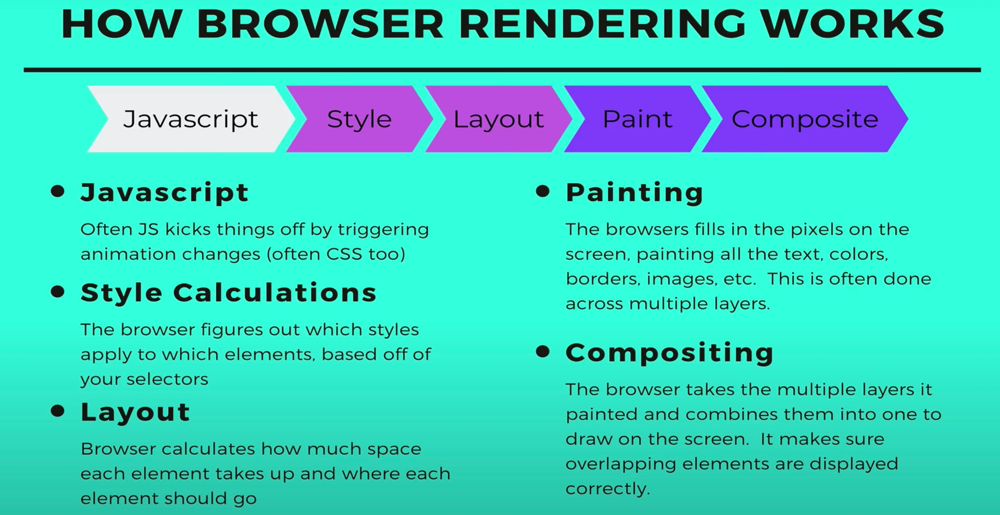
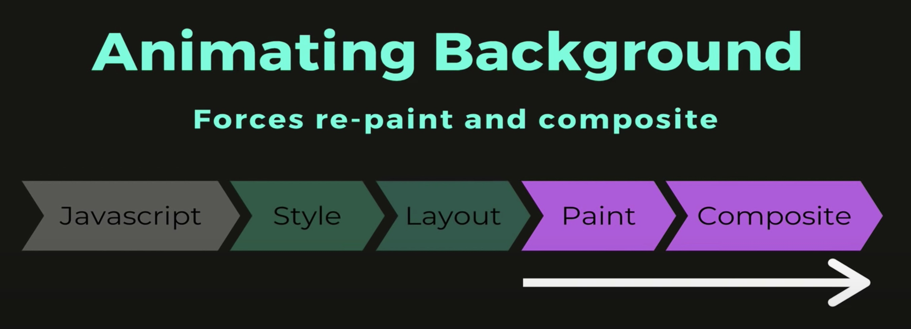

З усіх властивостей, які можуть бути анімовані, рекомендується, якщо можливо, використовувати всього дві: opacity (прозорість) і transform (трансформація). Здебільшого анімація інших властивостей не суттєво вплине на продуктивність сторінки, але краще дотримуватися цього правила, щоб створювати максимально продуктивну анімацію. Вся справа в тому, як браузер малює веб-сторінку.
- Крок JavaScript - скрипт або якась подія, наприклад ховер або фокус, запускають анімацію стилів елемента.
- Крок Style - відбувається обчислення нових стилів елементів, розраховується специфічність, конфлікти, каскадування тощо.
- Крок Layout - виконується розрахунок геометрії елементів. У разі анімації властивості, яка впливає на геометрію, наприклад margin, браузеру доводиться обчислювати нову позицію для цілої групи елементів.
- Крок Painting - відбувається малювання шарів, тому що елементи вкладені один в одного або позиціоновані, тим самим створюючи листковий пиріг.
- Крок Composite - компонування всіх підготовлених шарів і малювання фінального зображення на екрані користувача.
Наприклад, якщо анімувати властивість width, браузеру доведеться виконати кроки Layout > Paint > Composite, а це досить дорога операція для продуктивності веб-сторінки.

Анімації властивості background не впливає на геометрію елементів, тому браузеру достатньо виконати кроки Paint > Composite.
Для анімації властивостей opacity і transform браузеру не потрібно розраховувати нову геометрію або перемальовувати шари, достатньо виконати тільки крок Composite.

У прикладі демонструється різниця у продуктивності між анімацією лівого відступу і трансформації для переміщення 3000 елементів. У разі анімації margin, ефект переміщення рваний, стрибкоподібний, тому що браузеру доводиться постійно розраховувати геометрію і шари. Якщо анімується transform - переміщення плавне, без стрибків.
Увага:
Анімація трьох тисяч елементів - це досить ресурсомістка операція і може відображатися по-різному, залежно від потужності вашого комп'ютера.
See the Pen lesson-10-animatable-properties by goit-academy (@goit-academy) on CodePen.